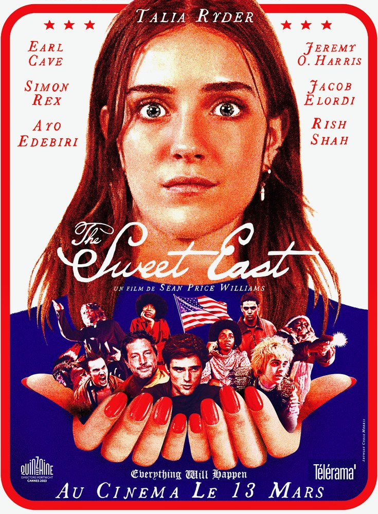

Fiche technique — ce que vend le dépliant

The Sweet East est un film américain de 2023, premier long métrage réalisé par le directeur de la photographie Sean Price Williams, sur un scénario du critique de cinéma Nick Pinkerton[1]. Williams en signe également l'image, tournée en 16 mm[1]. Le montage est confié à Stephen Gurewitz, la musique originale à Paul Grimstad et la conception sonore à Dean Hurley ; le film est produit par Craig Butta, Alex Coco et Alex Ross Perry pour Marathon Street et Base 12, dure 104 minutes et se présente au format 1,78:1[2].
À l'écran : Talia Ryder (Lillian), Earl Cave (Caleb), Simon Rex (Lawrence), Jacob Elordi (Ian), Ayo Edebiri (Molly), Jeremy O. Harris (Matthew) et Rish Shah (Mohammed)[1].
Présenté en première mondiale le 18 mai 2023 à la Quinzaine des Cinéastes du Festival de Cannes, le film sort aux États-Unis le 1er décembre 2023, distribué par Utopia, puis arrive sur Hulu le 17 mai 2024. Son exploitation en salles rapporte 564 192 dollars[1].
Avertissement de contenu : le film met en scène l'exploitation répétée d'une adolescente par des adultes, ainsi que deux épisodes de violence armée — dont l'un traité sur un registre ouvertement burlesque.
Synopsis — l'itinéraire annoncé
Lillian est lycéenne en Caroline du Sud. Un voyage scolaire l'amène à Washington ; c'est sa première vue du monde extérieur. Séparée de sa classe à la faveur d'un incident, elle ne rentre pas — elle part[1].
Commence alors une remontée de la côte Est qui tient du conte détraqué : un jeune anarchiste de bonne famille l'héberge dans un squat punk, un universitaire d'extrême droite l'installe chez lui, une équipe de cinéma indépendant la recrute pour un rôle, une communauté religieuse la recueille. Chaque groupe est un monde complet, avec ses rites, sa hiérarchie et sa certitude ; chacun voit en Lillian la page blanche qu'il attendait[3].
Le film progresse par chapitres qui ne s'annoncent pas ; la fin de l'itinéraire n'est pas détaillée ici.
Contexte de production — qui a payé le voyage
Sean Price Williams est, depuis vingt ans, l'un des chefs opérateurs de l'indépendance new-yorkaise. Ancien employé de longue date de Kim's Video & Music, il a signé l'image de Frownland (2007), de The Color Wheel (2011), de Listen Up Philip (2014) et Queen of Earth (2015) pour Alex Ross Perry, de Heaven Knows What (2014) et Good Time (2017) pour les frères Safdie, de Tesla (2020) et de Funny Pages (2022)[4]. The Sweet East est son premier film comme réalisateur.
Le financement tient à deux gestes distincts, et le film ne s'en cache pas. Williams pensait que personne ne mettrait d'argent sur un premier film ; c'est Alex Ross Perry qui, par ses relations d'agence, a réuni la distribution afin de rendre le financement possible. Après lecture du scénario, le producteur exécutif Jimmy Kaltreider a complété l'apport par un fonds de dimension modeste provenant de Peter Thiel[1]. Pour un film qui promène son héroïne d'une chapelle idéologique à l'autre, l'origine de l'argent fait partie du dossier plutôt que de l'anecdote.
Le tournage a été découpé selon les saisons : une moitié en octobre 2021, l'autre en mai 2022, le récit se déployant sur une année entière[1]. Le rôle de Jeff devait revenir à Eddie Deezen, indisponible, puis à Pete Davidson, empêché par son calendrier ; il est finalement échu à Andy Milonakis[1]. Sean Price Williams et Nick Pinkerton se connaissaient de longue date ; leur complicité s'est nouée pour de bon lors d'un jury du festival de Sarasota, au cours d'un long trajet passé à parler de Walerian Borowczyk — resté, de leur aveu, une force d'inspiration du film[5].
Le film est vendu à l'international par The Match Factory[2].
Structure narrative — le tracé, sans échelle
The Sweet East est un picaresque : une suite d'étapes reliées par une seule personne, non par une intrigue. Chaque séquence installe un milieu, en épuise les mœurs, puis le quitte sans conclure. La forme est ancienne — c'est celle du roman de route — et le film l'assume jusqu'à l'entêtement. Williams le formule sans détour : « Au moment précis où c'est censé finir, quand on sent que ça devrait retomber, il y a un chapitre de plus, et encore un autre »[6].
Ce refus de la courbe est le pari du film. Un récit d'apprentissage classique ferait converger les étapes vers une leçon ; ici, elles s'additionnent sans se totaliser. Lillian ne cumule pas d'expérience d'un épisode à l'autre : elle entre dans chaque monde aussi disponible qu'elle est entrée dans le précédent. Le montage de Stephen Gurewitz ne ménage aucune transition explicative — on change de secte comme on change de page[2].
Le procédé a un coût, que la critique a relevé : un film qui refuse de converger risque de ne rien dire de particulier. Il a aussi un rendement, que le film exploite : l'incompatibilité des milieux traversés devient elle-même le sujet, puisque rien dans la construction ne vient les réconcilier.
Mise en scène et procédés techniques — le grain de l'imprimé
Le film est tourné en 16 mm, sur une caméra Aaton XTR Prod[1][7]. Le choix n'est pas décoratif : il inscrit le film dans la filiation documentaire dont Williams se réclame. Interrogé sur son travail d'image, il répond d'ailleurs par la négative : « Nous avons tourné en 16 mm. C'était important, je crois. […] Visuellement, je n'avais pas de grande idée en entrant dans le film », ajoutant qu'il était « un peu plus en automatique sur la photographie »[8].
Cette abstention est une méthode, pas un renoncement. Elle vient d'une école précise — celle des opérateurs de cinéma direct, Albert Maysles en tête, dont Williams a hérité le mouvement fluide, le zoom appuyé, la lumière prise sur place et l'exposition volontiers imparfaite[7]. Il en décrit lui-même l'effet : « Pennebaker laisse le plan se dérouler ; on le sent trouver son cadre, et cela vous rend absolument présent »[6]. La caméra de The Sweet East cherche, rattrape, arrive parfois en retard — et c'est ce retard qui donne aux scènes leur air d'avoir été surprises plutôt que composées.
Le film n'est pas pour autant un exercice de sobriété. Il emploie plusieurs procédés d'illusion classiques, dont le procédé Schüfftan dans un plan tardif[1] — un trucage de 1927 réactivé dans un film de 2023, ce qui résume assez bien son rapport au passé du cinéma. La conception sonore de Dean Hurley et la musique de Paul Grimstad travaillent dans le même sens : elles décrochent régulièrement du réalisme de l'image sans jamais l'annuler[2]. Williams revendique un catalogue de références délibérément dépareillé, où voisinent Maysles, Borowczyk, John Waters, Lindsay Anderson et D. W. Griffith[8].
« La photographie et la caméra de Price Williams donnent au film un aspect granuleux, intime, superbe. »
Serena Seghedoni, Loud and Clear Reviews, 26 mai 2023[3]Personnages principaux — les curiosités du parcours
Le film est construit sur une asymétrie : un personnage central sans programme, entouré de figures qui n'ont que cela. Autour de Lillian se succèdent, selon la formule de Serena Seghedoni, « des anarchistes fortunés, des nazis et des punks », puis « des fanatiques religieux amateurs de musique électronique »[3].
Lycéenne de Caroline du Sud, à la fois moteur et surface du film. Williams la décrit comme « curieuse et intrépide », attentive à ce qui se passe autour d'elle[8]. Seghedoni juge que Ryder « excelle », « exigeant notre attention dans chaque scène » et donnant « une héroïne qui semble authentique jusque dans les situations les plus improbables »[3].
Le jeune anarchiste qui recueille Lillian à Washington et l'introduit dans un squat militant. Première chapelle du parcours, et premier écart entre le discours d'un groupe et son fonctionnement réel[1].
Décrit par la critique comme « un suprémaciste blanc d'âge mûr, affable, obsédé par Edgar Allan Poe »[3]. Le personnage est le point le plus périlleux du film : sa courtoisie et sa culture ne sont pas des masques que le récit arracherait — elles cohabitent avec son idéologie sans que rien ne les départage.
Le duo de cinéastes indépendants qui recrute Lillian. C'est l'étape où le film se retourne sur son propre milieu, et la seule où le regard satirique porte sur les gens qui l'ont fabriqué[1].
Le jeune premier du film dans le film, figure de la célébrité en formation. Sa présence au générique — la plus notoire de la distribution — participe elle-même du financement du film[1].
Dernière station de l'itinéraire, du côté d'une communauté religieuse — un groupe de plus, avec ses rites, sa douceur et sa prise[1].
Thèmes — quatre curiosités de l'arrière-pays
Le film ne décrit pas une société divisée en deux camps, mais un semis de groupes clos qui ne se rencontrent jamais : anarchistes de bonne famille, militants d'extrême droite, cinéastes indépendants, communauté religieuse[3]. Aucun ne connaît l'existence des autres autrement que par caricature. La satire ne consiste pas à les hiérarchiser : elle consiste à les mettre bout à bout et à laisser voir qu'aucun ne peut parler aux autres.
Lillian ne juge pas, ne réplique pas, ne se convertit pas non plus. Cette disponibilité fait d'elle un révélateur : chaque groupe, croyant l'accueillir, se met à parler de lui-même. Seghedoni note que tous, successivement, cherchent à « l'exploiter, la façonner, la posséder »[3]. Le film maintient jusqu'au bout l'ambiguïté de sa position — victime des circonstances ou passagère qui sait exactement ce qu'elle fait.
Tourner en 16 mm en 2023 est une prise de position sur ce qu'une image doit prouver. Le grain, l'exposition inégale, le zoom cherché à la main rattachent le film au cinéma direct et à sa promesse : ce que vous voyez a été attrapé, pas fabriqué[7]. Que le film use par ailleurs d'un trucage optique de 1927[1] ne contredit pas la profession de foi : cela en désigne l'objet — non pas la vérité, mais l'artisanat.
Le comique du film est son organe le plus exposé. Williams assume l'intention première : « Le scénario a été écrit pour nous faire rire, pour faire rire nos amis »[8], et il dit de Pinkerton qu'il est « l'une des personnes les plus drôles » qu'il ait rencontrées[6]. Un film écrit pour un cercle demande au spectateur d'y entrer — et la fracture de la réception se joue exactement là.
Réception critique et postérité — le registre des visiteurs
L'accueil est favorable mais nettement partagé. Rotten Tomatoes recense 81 % d'avis positifs sur 69 critiques ; Metacritic établit une note de 62 sur 100 à partir de 20 critiques, soit un accueil « globalement favorable » dont l'écart-type est éloquent[1].
Chiffres relevés sur la fiche encyclopédique du film, elle-même sourcée sur les agrégateurs ; ils sont susceptibles d'évoluer.
Du côté favorable, la première cannoise salue un film « merveilleusement lucide sur lui-même, ironique », dont l'ironie « surprend du début à la fin » en installant « toutes sortes de situations bizarres et pourtant douloureusement vraies »[3]. Du côté des réserves, les reproches convergent vers le scénario : on lui trouve un bavardage excessif, un film « qui donne des coups faciles et fait rire à l'occasion, mais ne semble jamais décider de ce qu'il veut dire », et jusqu'à des passages où il est « simplement content de lui »[9].
Ces deux lectures visent le même dispositif, et c'est ce qui rend le désaccord intéressant : le refus de conclure est indissociablement ce que le film a de plus rigoureux et ce qu'on peut lui reprocher de plus fondé. Après Cannes, le film poursuit son parcours en festivals — dont le Festival du film de New York — avant une exploitation américaine limitée par Utopia et une mise en ligne sur Hulu en mai 2024[1]. Sa postérité immédiate tient surtout à ce qu'il a lancé : la carrière de metteur en scène de l'un des chefs opérateurs les plus identifiables du cinéma indépendant américain.
Conclusion — fin de l'itinéraire
The Sweet East est un film de chef opérateur au meilleur sens : il fait confiance à ce que la caméra ramène plutôt qu'à ce que le récit démontre. Cette confiance produit sa réussite la plus nette — une Amérique filmée comme une succession de territoires étrangers les uns aux autres, sans qu'aucune voix off ne vienne les recoudre — et sa faiblesse la plus visible : à force de ne rien conclure, le film laisse au spectateur le soin de décider s'il a assisté à une satire ou à une collection de sketches.
La critique s'est divisée sur ce point précis, et les deux camps ont raison ensemble. Le film est bavard parce que ses personnages le sont, et ses personnages le sont parce que c'est ce qui reste quand des groupes n'ont plus personne d'extérieur à qui parler. Reste alors ce que le film a de moins discutable : le visage de Talia Ryder, tenu presque en permanence à l'image, qui accueille tout et ne valide rien. Là où un film d'apprentissage aurait fait de Lillian une conscience, celui-ci en fait une chambre d'écho — et c'est en écoutant ce qu'elle renvoie qu'on entend le mieux le pays qu'elle traverse.